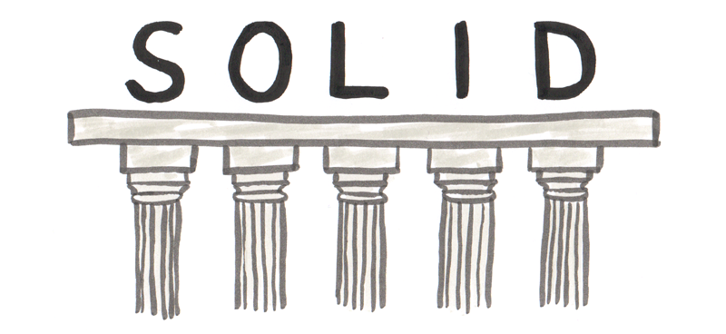
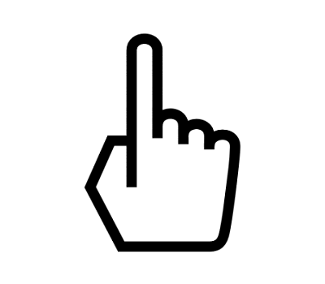
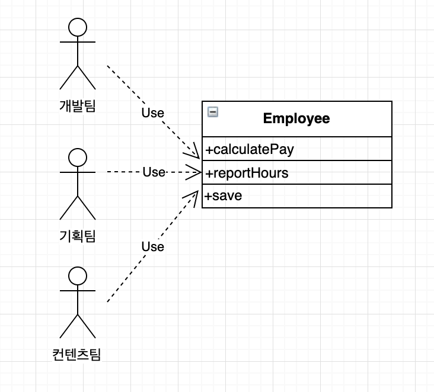
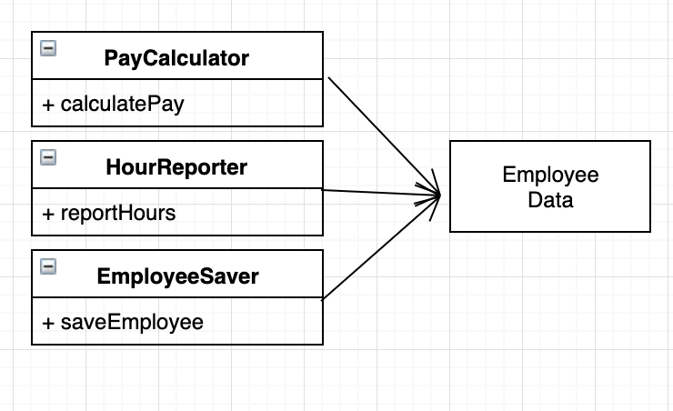
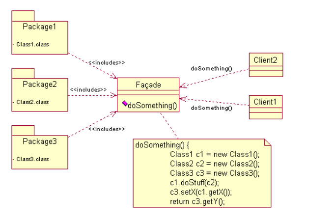
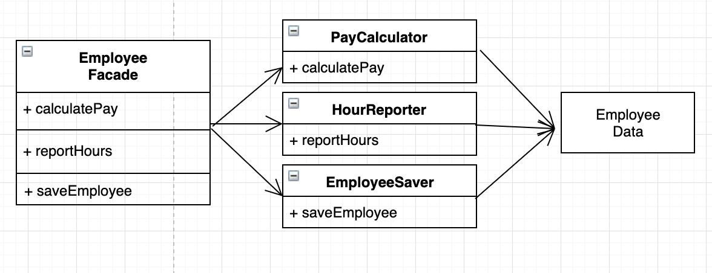

설계원칙

좋은 소프트웨어 시스템은 깔끔한 코드(clean code)로 부터 시작한다. 좋은 코드로 좋은 아키텍처를 정의하는 원칙이 바로 SOLID다.
SOLID 원칙은 함수와 데이터 구조를 클래스로 배치하는방법, 그리고 이들 클래스를 서로 결합하는 방법을 설명해준다.
SOLID 원칙의 목적
- 변경에 유연하다.
- 이해하기 쉽다.
- 많은 소프트웨어 시스템에 사용될 수 있는 컴포넌트의 기반이 된다.
SOLID
SRP (단일 책임 원칙) : 각 소프트웨어 모듈은 변경의 이유가 하나, 단 하나여야만 한다.
OCP (개방-폐쇄 원칙) : 소프트웨어 개체(클래스, 모듈, 함수 등등)는 확장에 대해 열려 있어야 하고, 수정에 대해서는 닫혀 있어야 한다. 즉 기존 코드를 수정하기 보다는 반드시 새로운 코드를 추가하는 방식으로 시스템의 행위를 변경할 수 있어야 한다.
LSP (리스코프 치환 원칙) : 상호 대체 가능한 구성요소를 이용해 소프트웨어 시스템을 만들 수 있으려면, 이들 구성요소는 반드시 서로 치환 가능해야 한다.
ISP (인터페이스 분리 원칙) : 사용하지 않은 것에 의존하지 않아야 한다. 즉, 자신이 사용한 것에만 의존해야 한다.
DIP (의존성 역전 원칙) : 고수준 정책을 구현하는 코드는 저수준 세부사항을 구현하는 코드에 절대로 의존해서는 안된다. 대신 세부사항이 정책에 의존해야 한다.
SRP : 단일 책임 원칙

SRP 는 모든 모듈이 단 하나의 일만 해야한다는 의미가 아니다.
SRP 의 역사적 기술이다.
단일 모듈은 변경의 이유가 하나, 오직 하나뿐이어야 한다. 즉, 하나의 모듈은 하나의, 오직 하나의 액터에 대해서만 책임져야 한다.
위험 징후 : 중복과 병합
많은 사람들이 서로 다른 목적으로 동일한 소스파일을 변경해야 하는 경우 중복과 병합 등의 징후들이 발생한다.

한 예로 직원들의 근무시간을 계산해주는 모듈이 있다고 가정했을때, 해당 모듈은 개발팀(액터1), 기획팀(액터2), 컨텐츠팀(액터3) 명의 액터를 위해 동작해서는 안된다.
서로 다른 액터가 의존하는 코드는 의도하지않은 중복이 발생하고, 서로 다른 변경사항들에 의해 충돌하게 된다. 결국 리스크로 이어진다.
결국 이 문제를 벗어나는 방법은 서로 다른 액터를 뒷받침하는 코드를 서로 분리하는 것이다.
해결책
가장 확실한 해결책은 여러가지가 있다. 메서드를 각기다른 클래스로 이동시키거나, 데이터와 메서드를 분리하는 방식이다.

아무 메서드가 없는 간단한 데이터 구조인 EmployeeData클래스를 만들어 세 개의 클래스가 공유하도록 하고, 각클래스에는 자신의 메서드에 필요한 소스코드만을 포함한다. 단, 세 클래스는 서로의 존재를 몰라야 한다.
정말 이렇게 된다면 해결된 것일까?
이렇게 짜여진 코드 속에서 발생하는 단점은 개발자가 세 가지 클래스를 인스턴스화하고 추적해야 한다는 점이다.
이를 해결하기 위해 사용되는 방법이 퍼사드 패턴이다.
- 퍼사드 패턴(Facade Pattern)
Facade는 “건물의 정면”을 의미하는 단어로 어떤 소프트웨어의 다른 커다란 코드 부분에 대하여 간략화된 인터페이스를 제공해주는 디자인 패턴을 의미한다.
퍼사드 객체는 복잡한 소프트웨어 바깥쪽의 코드가 라이브러리의 안쪽 코드에 의존하는 일을 감소시켜 주고, 복잡한 소프트웨어를 사용 할 수 있게 간단한 인터페이스를 제공한다.

위의 예제에 적용시켜 보자.

EmplyeeFacade 에 세 클래스의 객체를 생성하고, 요청된 메서드를 가지는 객체로 위임하는 일을 책임진다. 퍼사드 패턴의 적용 예이다.
퍼사드 패턴 더 알아보기 > https://lktprogrammer.tistory.com/42
결론
“단일 책임 원칙은 메서드와 클래스 수준의 원칙이다.
그러나 컴포넌트 수준에서는 공통 폐쇄 원칙(common closure principle)이 되고, 아키텍처 수준에서는 아키텍처 경계의 생성을 책임지는 변경의 축이 된다.”
출처
https://lktprogrammer.tistory.com/42
https://team-coder.com/solid-principles/